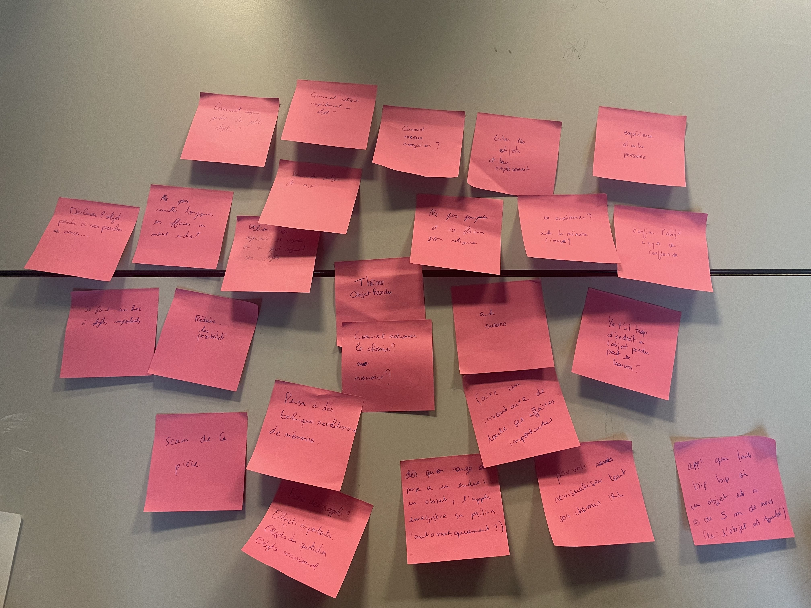

Objets perdus
L'idée de notre projet se porte sur la thématique des objets perdus
Interview par Kim Saïdi
Interview 1 Interview 2Interview par Malo ...
Interview 1 Interview 2Interview par Rayan ...
Interview 1 Interview 2Interview par Saad ...
Interview 1 Interview 2Elio
Elio est constamment en proie à la perte de ses affaires, faisant preuve d'une grande distraction. En moyenne, toutes les deux jours, il perd au moins 10 minutes à les chercher. Bien qu'il parvienne toujours à les retrouver, il ne montre aucun effort pour s'organiser plus efficacement.
Baros
Baros est une personne qui perd très peu ses affaires. Il est très organisé et range tout le temps ses affaires au même endroit.
Loma
Autrefois, Loma perdait fréquemment ses affaires, mais il a su tirer des leçons de ses erreurs. Désormais, grâce à ses méthodes développées, il perds très peu ses affaires et démontre une grande organisation pour les retrouver rapidement.
Notre premier Brainstorming
Idées folle
- Les objets ont des pieds et revienne tout seul si ils sont perdus.
- Des lunettes visions qui recrées nos mouvenements pour qu'on puisse revoir où on a mis nos affaires.